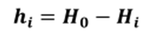
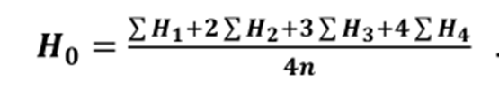
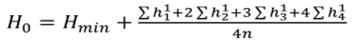
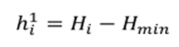
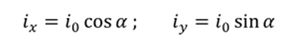
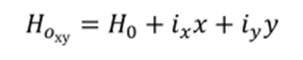
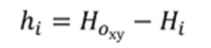
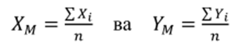
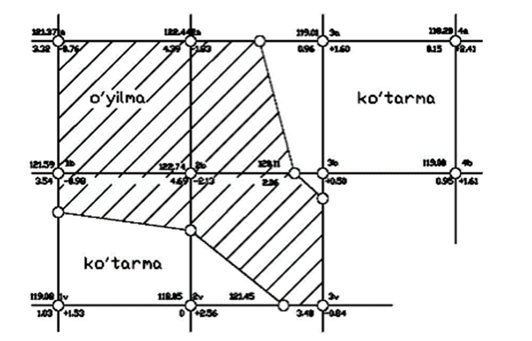
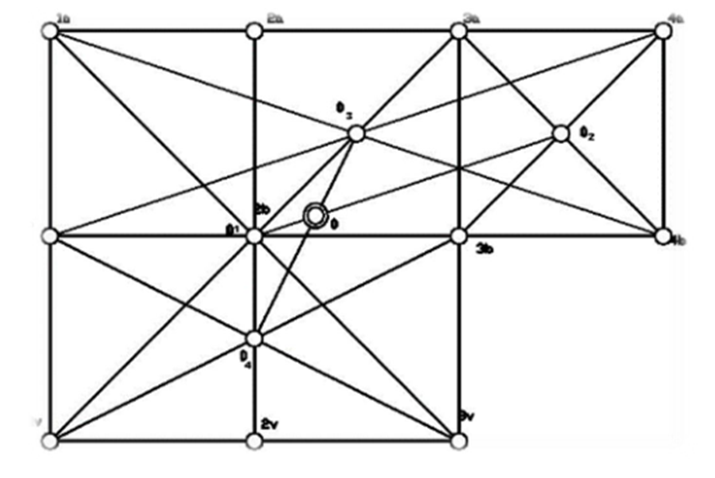

1-амалий иш Мавзу: Вертикал текислашни лойихалаш.
Аҳоли яшаш пунктлари ва саноат корхоналарини қуриш ва ободонлаштиришда ер юзаси рельефини
табиий ҳолатини ўзгартиришга зарурият туғилади. Ер юзаси рельефини бундай ўзгартиришга
вертикал (тик) текислаш дейилади. Юзани квадратларга бўлиб нивелирлашдан олинган маълумотлар
бўйича вертикал текислашни лойиҳалашни бир неча ҳолатини кўриб чиқамиз.
Биринчи ҳолат. H 0 лойиҳавий отметкаси берилган горизонтал майдонни
лойиҳалаш талаб этилади.
Ҳар қайси квадрат учи учун ишчи отметкалар қуйидаги ифодалар билан аниқланади:

бу ерда: Нi – і квадрат учининг ер отметкаси.
Иккинчи ҳолат: Горизонтал майдонни ер ишлари балансини сақлаган (кўтарма ҳажми ўйилма
ҳажмига тенг) ҳолда лойиҳалаш талаб этилсин. У ҳолда горизонтал майдоннинг лойиҳавий (қизил)
отметкаси қуйидаги ифода ёрдамида ҳисобланади:

Бу ерда: H1, – фақат бир квадратга тегишли, Н2, – фақат икки қўшни
квадратга тегишли, Н3; - уч
қўшни квадратга тегишли, H4 - тўртта квадратга тегишли ер отметкалари, п –
майдондаги квадратлар сони.
Лойиҳавий отметкалар ҳисоблашда (13.27) формулани қуйидагича ўзгартириб ёзиш мумкин:

Бунда: Нmin- майдондаги энг кичик отметкани бутун қиймати.

Лойиҳавий отметкаси берилган квадрат учи координата боши деб олинади. Х ва У ўқлари
йўналишида лойиҳавий нишабликлар ҳисобланади.

Координата боши деб олинган квадрат учидан ташқари қолган квадрат
учларининг лойиҳавий баландликлари қуйидагига тенг бўлади:
х ва у квадрат томонлари йиғиндисидан иборат бўлиб, координата бошига нисбатан мусбат ва
манфий ишорадалиги инобатга олинади.

Квадрат учларининг ишчи отметкалари қуйидагича ҳисобланади.

Но - квадрат учининг лойиҳавий отметкаси, Нi- квадрат учининг ер
Отметкаси.
Тўртинчи ҳолат: берилган нишабликдаги майдонни ер ишлар балансини сақлаган ҳолда лойиҳалаш
талаб этилсин. Бундай ҳолда лойиҳаланаётган нишабликдаги майдоннинг оғирлик марказининг
(2-расм) қизил отметкаси Н0
формула ёрдамида ҳисобланади. Қизил отметка майдон оғирлик марказига тегишли деб олиниб,
координата боши деб қабул қилинади, қолган ҳисоблашлар учинчи ҳолатдагидек бажарилади.
Лойиҳаланаётган майдон оғирлик маркази аналитик график ёки аналитик усулда аниқланади.
Па-за-36-1b ва За-4a-46-1б шакллар марказлари O1 ва О1 топилади. Кейин
la-4a-46-1б ва 16-36-36-1bшакллар марказлари О3 ва О4 аниқланади.
O1 ва O2, O3 ва O4 оғирлик марказларини
туташтиришда кесишиш нуқтаси майдон оғирлик маркази бўлади.
Аналитик усулда оғирлик марказини координатаси майдон координата бошига нисбатан қуйидагича
ҳисобланади:

X1 ва Y2 ҳар бир квадрат оғирлик марказининг координатаси.

1-расм. Вертикал текисликни лойиҳалаш.

2-расм. Майдон марказини аниқлаш.